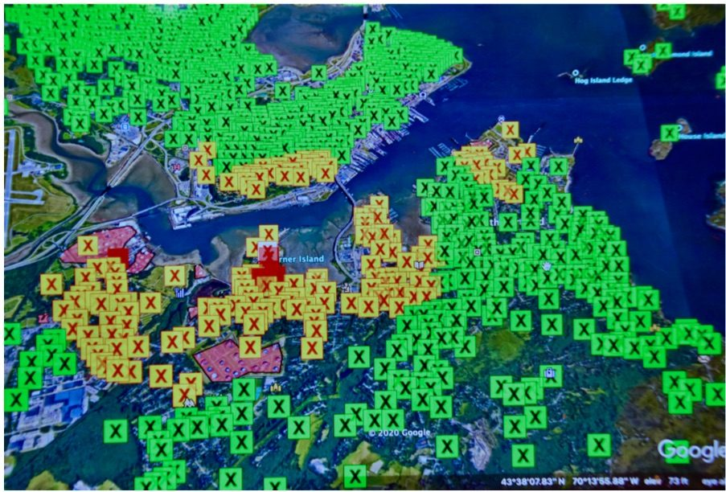

South Portland Tank Farms
Where things stand — October 2026
State fence-line monitoring data has now been collected at the tank farms. Concerning readings came in near every facility. At Citgo on Mechanic Street in Pleasantdale, the air consistently and dramatically exceeded the state standard for benzene, a well-studied carcinogen. At South Portland Terminal on Lincoln Street, one reading registered 12 times the state’s ambient air quality standard.
The raw monitoring summaries are already public on the City’s Air Quality page: the September 2026 24-hour VOC monitoring results (PDF) and the October 6, 2026 fence-line three-year data summary (PDF). DEP and CDC analysis of the fence-line data is expected imminently. When the state publishes its analysis, PSP will post it here along with our response.
The City Council has not set a date for its next workshop. You can email the Council now to ask it to require better technology at the tank farms.
Now is the time to act:
- The City Council took no vote at its Oct. 27 workshop and has not set a date for the next one.
- Email the City Council and ask it to require better technology at the tank farms, and to make public what special counsel advises about the city’s authority. City Council email addresses are found here: southportland.gov/411/City-Council.
- Email protectsouthportland@gmail.com to get plugged into local tank farm efforts.
120 large petroleum tanks, run by six major oil companies
There are 120 large petroleum tanks in South Portland, run by six major oil companies. Residents have raised concerns for decades that the tanks compromise air quality for the people who live, work and play very close to them. New state data measuring air quality along the fence lines of these tank farms has confirmed what we’ve felt, and smelled, for years: They are bad neighbors, profiting off harm to our community.
Concerning readings were collected near all the tanks, but two tank farms stand out. At Citgo on Mechanic Street, which sits very close to homes in Pleasantdale, monitors found the air consistently and dramatically exceeded state standards for benzene, a well-studied carcinogen. Benzene measurements were highest at South Portland Terminal on Lincoln Street, bordered by businesses, homes and Forest City Cemetery, with one reading registering 12 times higher than the state’s ambient air quality standard, meant to protect people from cancer risk.
Use the slider inside the map to change the search radius around the fence lines. Facilities, schools and child care, the buffer and DEP air monitors are labeled.
How we got here: the court record, the legislation and the media coverage are in the campaign history.
Health effects of VOCs
Volatile Organic Compounds (VOCs) are made up of elements including Hazardous Air Pollutants (HAPs). Global was cited by the EPA for releasing twice their permitted VOCs for at least seven years. HAPs vary in their disease effects.
They hit the very young the hardest because they are growing rapidly and their resting metabolic rate is higher. They consume more oxygen per body weight than adults. This significantly increases their exposure to HAPs. Their airways are narrower and their mucous glands are larger. Irritations that might cause only a slight response in an adult could result in dangerous obstruction for a child. This obstruction can put them at risk for allergies and life threatening asthma.
For all of us, long-term exposure can harm the heart and circulatory system, the liver (our major organ of detoxification) and, most critically, the immune system. The genetics we inherit from our parents and past generations isn’t necessarily what condemns us to the cancers, autoimmune diseases and other illnesses that we struggle with. Researchers now describe inherited DNA as a blueprint. It is the environmental challenges that potentially change the DNA that pulls the trigger for these diseases.
We know that increasing amounts of these VOCs in the air we breathe are a risk factor, especially for children, the elderly, pregnant women and people living near the source of these pollutants. We have heard testimony from people living in the vicinity of the Global tank farm that they have endured frequent severe headaches, and discomfort of breathing in the toxic smells emitted especially in the evenings.
Cancer risk
Cancer Risk For Portland and South Portland Residents From Tank Farm Emissions Using the EPA HEM-3 Model
Legend — Increased Cancer Risk Per Million People:
- Green squares: low-3, high-19
- Yellow squares: low-20, high-89
- Red squares: low-101, high-165

This map summarizes the areas at greatest risk for increased cancer incidence by color. It was created by South Portland environmental engineer David Falatko using the EPA risk assessment model HEM-3. The Human Exposure Model (HEM-3) is a streamlined yet rigorous tool that can be used to estimate ambient concentrations, human exposures and health risks that may result from air pollution emissions from complex industrial facilities.
The risk factors are based upon the permitted levels of emissions for each tank farm except Portland Pipeline Co. LLC, whose tanks were no longer in use. However, since that time, six to eight of the 23 tanks have been filled with crude oil. Refilling these tanks will result in an increase in the above risk estimates since the Portland Pipeline company was ranked with Sprague and Gulf as the largest permitted emitter of HAPs when in full operation.
The Maine CDC considers the acceptable cancer risk to be 10 additional cancers per million population. Other states such as Mass. and NY consider the acceptable increase to be 1 cancer per million of population.
What the model clearly shows is that the tank farms presently represent an unacceptable increase in cancer risk to fence-line neighborhoods. The solution is to require the capture of the harmful emissions using the best available control technology.